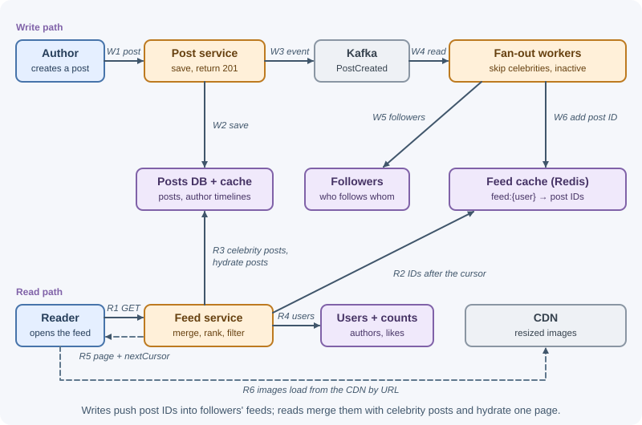
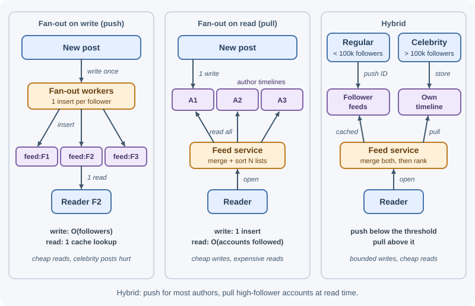

Case Study: News Feed¶
A news feed shows each user a stream of recent posts from the accounts they follow, like the home timeline of a social network. The central problem is that a single post must appear in many feeds, and a single feed draws from many authors. Deciding when to do that work — when a post is written, when a feed is read, or a mix — shapes the whole design, especially for accounts with millions of followers.
Requirements¶
Functional¶
- Users create posts with text and optional images.
- Users follow and unfollow other users.
- The home feed shows posts from followed accounts, newest or ranked first.
- Infinite scroll: load more posts as the user scrolls.
- Each post shows its author, media, and like/comment counts.
- New posts appear in followers' feeds within seconds.
Non-functional¶
- Scale: 300 million monthly users, 100 million daily active users.
- Latency: feed load under ~300 ms at p99.
- Availability: feed reads 99.99%; posting 99.9%.
- Consistency: eventual — a few seconds before a post reaches followers is fine; authors must see their own post immediately.
- Skewed graph: most users have hundreds of followers; some have tens of millions.
Capacity estimates¶
Assumptions: 100 M DAU; 10 feed loads per user per day; 10% of DAU post once per day; average 200 followers per poster; 1 KB per post record; 30% of posts include a 1 MB image; peak = 3×; ~70 bytes per feed entry in a Redis sorted set (ID + score + overhead).
Posts: 100 M × 10% = 10 M /day → ~100 /s peak ~300 /s
Feed reads: 100 M × 10 = 1 B /day → ~10,000 /s peak ~30,000 /s
Fan-out on write (average):
10 M posts × 200 followers = 2 B feed inserts/day
→ ~20,000 /s peak ~60,000 /s
One celebrity post with 50 M followers → 50 M inserts for one post (!)
Post storage: 10 M × 1 KB = 10 GB/day ≈ 3.65 TB/year
Media: 3 M images × 1 MB = 3 TB/day → object storage + CDN
Feed cache (active users only, 200 entries each):
100 M × 200 × 70 B ≈ 1.4 TB → sharded Redis cluster
Follow graph: 300 M × 200 follows = 6 × 10^10 edges, stored in both
directions (followers and following)
Conclusions: reads outnumber posts ~100:1, which favors precomputing feeds at write time — except for very high-follower accounts, whose fan-out would be enormous. Feeds should store post IDs, not post bodies.
API design¶
POST /v1/posts
{ "text": "Sunset over the bay", "mediaKeys": ["m_8f3a"] }
→ 201 { "id": "1290481234567892992", "createdAt": "2026-11-07T18:02:11Z" }
GET /v1/feed?limit=20
GET /v1/feed?limit=20&cursor=eyJiZWZvcmUiOiIxMjkwNDgxMjM0NTY3ODkyOTkyIn0
→ 200
{ "items": [
{ "postId": "1290481234567892992",
"author": { "id": "u_42", "handle": "maya", "avatarUrl": "https://cdn..." },
"text": "Sunset over the bay",
"media": [ { "url": "https://cdn.example.com/m_8f3a_1080.webp", "width": 1080, "height": 720 } ],
"likeCount": 31, "commentCount": 4,
"createdAt": "2026-11-07T18:02:11Z" } ],
"nextCursor": "eyJiZWZvcmUiOiIxMjkwNDgxMTk5ODc2NTQzMjEwIn0" }
POST /v1/users/{id}/follow → 204
DELETE /v1/users/{id}/follow → 204
GET /v1/users/{id}/posts?cursor=... → author's own timeline
Post IDs are returned as strings because 64-bit IDs exceed JavaScript's safe integer range. The cursor is opaque to clients. See API design best practices.
Data model¶
users — id (PK), handle (unique), name, avatarKey,
followerCount, followingCount.
posts — postId (PK; Snowflake-style, time-ordered), authorId,
text, mediaKeys, createdAt, deletedAt. Index (authorId, postId
DESC) serves each author's timeline — used by fan-out on read.
Follow graph — stored twice, one table per access direction:
| Table | Partition key | Sort key | Used for |
|---|---|---|---|
followers |
followeeId |
followerId |
Fan-out on write: "who should receive this post?" |
following |
followerId |
followeeId |
Fan-out on read: "whose posts do I pull?" |
A wide-column or key-value store handles billions of edges partitioned this way; a graph database is not required for one-hop lookups.
Home feeds (precomputed) — Redis sorted set per user:
feed:{userId} → members: postId, score: createdAt in milliseconds
trimmed to the newest ~200–500 entries
The score is the creation time, not the 64-bit post ID itself: sorted-set scores are double-precision floats, which represent integers exactly only up to 2^53, so large Snowflake IDs would lose precision and misorder.
Post cache — post:{postId} → serialized post, for fast batched
hydration. Counters (likes, comments) are kept in a separate counter
service/cache and merged in at read time.
High-level design¶

Write path: the post service stores the post and returns immediately;
the PostCreated event lets fan-out workers asynchronously add the post ID
to each follower's precomputed feed. The author's own feed is updated
synchronously so they see their post at once.
Read path: the feed service reads post IDs from the user's precomputed feed, merges recent posts from any high-follower accounts the user follows, ranks the candidates, hydrates the top ones in batch, filters out deleted or blocked content, and returns a page with a cursor.
Deep dives¶
1. Fan-out on write, fan-out on read, and the hybrid¶

| Fan-out on write (push) | Fan-out on read (pull) | |
|---|---|---|
| When work happens | When a post is created: insert its ID into every follower's feed | When a feed is read: fetch recent posts from every followed account and merge |
| Read cost | Very low (one sorted-set read) | High (N author timelines per read, merge, sort) |
| Write cost | Proportional to follower count | Minimal |
| Freshness | Seconds of fan-out delay | Always current |
| Problem case | Celebrities: 50 M inserts per post; wasted work for inactive followers | Users following thousands of accounts; heavy reads at 30,000/s |
Hybrid (chosen):
- Normal accounts (below a threshold, for example 100,000 followers): fan out on write.
- High-follower accounts (above the threshold): do not fan out. At read time, the feed service pulls their recent posts (from the cached author timeline) for users who follow them and merges them in. Each celebrity's recent posts are read by millions of users, so their timelines stay hot in cache.
- Inactive users (no visit in, say, 30 days) are skipped during fan-out. When they return, their feed is rebuilt on demand by pulling, then kept warm by push again.
This bounds the write amplification while keeping reads cheap for the common case.
2. The feed cache¶
- Store post IDs only (with a score), not post bodies. A post edit or like count change then never requires updating millions of feed entries; hydration fetches current data.
- Trim each feed to the newest ~200–500 entries (
ZADDthenZREMRANGEBYRANK); older history is served by pulling if anyone scrolls that far. - Hydration fetches posts with one batched read (
MGETon the post cache, falling back to the posts DB for misses), plus authors and counters, in parallel. - Cache miss (evicted or new user): rebuild by pulling from followed authors' timelines — expensive, so rate-limit rebuilds and keep feeds for active users in memory. Persisting feeds to a wide-column store is an option if rebuilds become too costly.
- Sizing: ~1.4 TB for active users, sharded by
userIdacross a Redis cluster with replicas. See Redis as a cache and cache failure modes.
3. Ranking basics¶
A chronological feed sorts by time. A ranked feed tries to show the most relevant posts first, in stages:
- Candidate generation: IDs from the precomputed feed + celebrity pulls (a few hundred candidates).
- Feature lookup: recency, the user's affinity with the author (past interactions), engagement so far (likes, comments, shares), content type, whether the user has already seen it.
- Scoring: a weighted formula or a machine-learning model predicting engagement. A simple illustrative formula combines engagement, affinity, and time decay:
score = (1 + likes + 2 × comments) × affinity(user, author) / (ageHours + 2)^1.5
- Re-ranking: diversity rules (avoid five posts in a row from one author), boosting fresh posts, removing already-seen ones.
Ranking must fit the latency budget: keep candidate sets small, precompute features, and cache affinity scores.
4. Cursor pagination¶
Offset pagination (?page=3) breaks when new posts arrive at the top: items
shift down, so the user sees duplicates or misses posts.
- Chronological feeds: the cursor holds the score (timestamp) and post ID of the last item seen. The next page is "the 20 newest entries at or below that timestamp," skipping entries already returned that share the same millisecond:
ZRANGE feed:{userId} 1793815331000 -inf BYSCORE REV LIMIT 0 21
→ drop items up to and including the cursor's post ID, return 20
(ZRANGE ... BYSCORE REV needs Redis 6.2+; older versions use
ZREVRANGEBYSCORE.)
- Ranked feeds: rankings change between requests, so a cursor on score is unstable. Rank once when the user opens the feed, store the ordered list of IDs as a short-lived feed session (for example, in Redis for 30 minutes), and page through that snapshot. Newer posts surface through a "New posts" prompt that starts a fresh session.
Cursors are encoded (for example, base64 JSON) so clients treat them as opaque and the server can change their contents.
5. Media and the CDN¶
Images are uploaded directly to object storage with presigned URLs, then a background job creates resized variants (thumbnail, 480 px, 1080 px) in modern formats. Feed responses contain CDN URLs, never bytes. Variant URLs are immutable (a new upload gets a new key), so the CDN can cache them for a long time. Clients request the size that fits the screen. See CDN and file storage and uploads.
6. Consistency expectations¶
- Eventual consistency is acceptable: followers may see a post a few seconds after it is created; counts may lag slightly.
- Read-your-writes for authors: write to the author's own feed synchronously (or merge their latest posts on read) so they never wonder whether posting worked.
- Deletes: mark the post deleted in the posts DB and cache; hydration drops deleted posts. Removing the ID from millions of feeds happens lazily or not at all — it simply never renders.
- Unfollow: filter the unfollowed author at read time immediately; clean their entries out of the feed asynchronously.
- Follow: asynchronously backfill the new followee's recent posts into the follower's feed.
- Privacy changes and blocks are enforced at read time (filtering), because cached feeds may contain stale entries.
See consistency and the CAP theorem.
Bottlenecks and trade-offs¶
- What fails first: fan-out workers during spikes (a burst of posts from popular-but-below-threshold accounts) — the queue backs up and feeds lag. Scale workers on queue depth; tune the celebrity threshold; prioritize fan-out to recently active users first.
- Redis memory: feed caches dominate memory; keep only active users and short feeds, store IDs only.
- Hot posts: a viral post's cache key is read by millions; use local in-process caches on feed servers and cache replicas.
- Ranking latency: model scoring is the most expensive step; bound the candidate count and precompute features.
- Alternatives considered: pure pull (simple writes, but too expensive at 30,000 feed reads per second for users following hundreds of accounts); pure push (celebrity posts cause tens of millions of writes); storing full posts in feeds (fast reads, but edits, deletes, and counts become massive update fan-outs).
- Trade-off accepted: feeds are eventually consistent and slightly stale in exchange for fast, cheap reads.
Real-world references¶
- Facebook's Multifeed assembles News Feed when it is requested. Aggregators are the "query engine that accepts user queries and retrieves News Feed info from backend storage," doing aggregation, ranking, and filtering; leaf servers form a distributed storage layer that indexes the most recent News Feed actions in memory (about 20 leaves make one full replica); tailers feed user actions into the leaves. Separating aggregators (CPU-heavy) from leaves (memory-heavy) let each scale independently and gave a reported 40% efficiency improvement (Serving Facebook Multifeed). This is a fan-out-on-read design, made fast by keeping recent activity in memory — the opposite end of the trade-off from precomputed feeds.
In production¶
- Followers see posts late. Symptom: new posts take minutes to appear. Detect: fan-out lag metric (time from post to fan-out complete) and queue depth. Cause: a burst from popular accounts just under the celebrity threshold. Fix: autoscale fan-out workers on queue depth, lower the threshold, fan out to recently active users first.
- Feed cache evictions. Symptom: slow feeds and expensive rebuilds. Detect: Redis memory usage and evicted-keys metrics, rebuild rate. Cause: feeds for too many users or too many entries per feed. Fix: trim feeds, cache only active users, add shards.
- Viral post overloads one shard. Symptom: one cache node saturated. Detect: per-node CPU and top-key reports. Cause: millions of hydrations of the same post. Fix: in-process caching of hot posts and cache replicas.
- Ranking blows the latency budget. Symptom: feed p99 above target. Detect: distributed traces showing time per stage. Cause: too many candidates or slow feature lookups. Fix: cap candidates, precompute and cache features.
- Deleted posts still visible. Symptom: reports of removed content in feeds. Detect: user reports, audit of deleted IDs served. Cause: stale post cache entries. Fix: invalidate the post cache on delete and check deletion status during hydration.
Revision questions¶
- Compare fan-out on write and fan-out on read. Which would you use for an account with 50 million followers, and why?
- How does the hybrid approach combine both, and what decides the threshold?
- Why should the feed cache store post IDs rather than full posts?
- Why does offset pagination fail for feeds, and how do cursors and feed sessions fix it?
- How does the design give authors read-your-writes consistency while followers see eventual consistency?
- How are deletes and unfollows handled without rewriting millions of feeds?